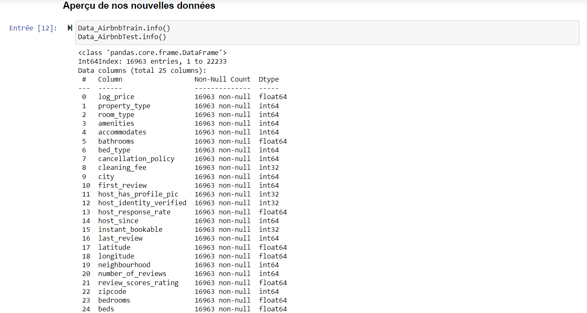

The aim of this project is to predict the rental price of an Airbnb based on a set of characteristics. A large part of the work was to convert the textual characteristics into information that can be used by a machine learning algorithm.
An initial sort was carried out on features that were difficult to process, such as unique values like ‘id’, ‘name’, ‘unnamed: 0’, and ‘description’. Boolean features (‘cleaning_fee’, ‘host_has_profile_pic’, ‘host_identity_verified’, and ‘instant_bookable’) were replaced by 0s or 1s, ‘first_review’ and ‘last_review’ by the number of days since the first and last evaluations (the same principle was applied to the ‘host_since’ feature). Nan' in “host_response_rate” have been replaced by 0 and percentages by decimal numbers between 0 and 1, “cancelation_policy” values by an ordinal encoding with 0 to 4 depending on whether the variable takes the value “flexible”, “moderate”, “strict”, “super_strict_30” or “super_strict_60”, “amenities” by the number of elements it contains, property_type', “room_type”, and “bed_type” by associating a particular number with each type of distinct element in one of these characteristics, and finally as far as the “city” characteristic is concerned I've also encoded it after giving a visualisation of the regions according to longitude and latitude coordinates.
To simplify the data even further without losing a significant amount of information, I had to carry out a PCA. However, the results of the PCA didn't give me any interesting results in terms of simplifying the model without any significant loss of information. This is why I directly deleted certain characteristics after analysing a correlation matrix.
Having sorted the data and identified the relevant features, all that remained was to separate Data_AirbnbTrain into two variables X and y, where y contains 'log_price' and X the other features. In a first test, 3 models were tested: linear regression, decision trees and random forest. The results showed problems of high bias and low variance. I decided to carry out a second test on these 3 models, solving these problems. To improve our models, it is possible to increase the number of features to make the model more complex (this can be done by re-training the model with DataAirbnb_Train, which contains many more features), but also to decrease the regularization of our model.
The best results were obtained with the random forest model, where we managed to obtain an MSE close to 0.1, which reassures us that our model will predict values close to the real ones, and an r2score close to 0.75, which assures us that our model explains the variance of our data relatively well.